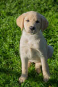
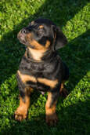
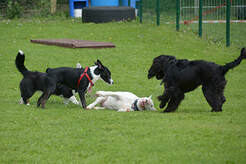
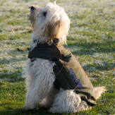
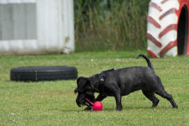
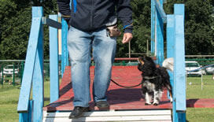
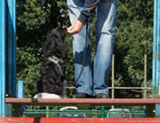
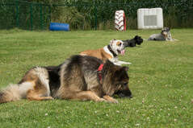

Gehoorzaamheid
Een goed opgevoede hond is een aangename hond waarmee je overal welkom bent. De nadruk ligt bij ons dan ook vooral op ‘opvoeding’, en niet zozeer op het wedstrijdgebeuren. Dit betekent echter niet dat we geen correct gedrag van de hond verwachten. Je leert om jouw hond het gewenste gedrag aan te leren, zonder druk of dril maar op een aangename manier. We maken geen onderscheid tussen de verschillende rassen maar houden rekening met het karakter en temperament van elke hond. De band tussen baas en hond staat centraal bij ons!
Afhankelijk van de leeftijd van de hond start je in de puppyklas of bij de beginners. Vanaf de beginners/junioren kan je één keer per maand deelnemen aan het overgangsexamen om over te gaan naar een volgende groep.


Puppy's
Bij de puppy's leert de hond dat de baas de bron is van alle pret en vreugde in deze wereld. Hij leert dat de baas het altijd goed met hem voorheeft en dat het altijd leuk is om bij de baas te zijn. We gaan de hond samen met zijn baas de wereld leren ontdekken. Je leert om op een aangename manier jouw pup gewenst gedrag te laten vertonen door consequent gedrag dat voor de hond altijd een positief gevolg heeft.
Junioren
Op de leeftijd van 4,5 maanden à 5 maanden gaan de grote pups over naar de junioren. Hier leer je verder hoe jij op de meest efficiënte en diervriendelijke manier allerlei bevelen aan de hond kunt aanleren. Daarbij gaan we vooral gebruik maken van klassieke en operante conditionering. Niet vertrouwd met deze woorden? Geen probleem, je leert het tijdens de les.


Beginners
Deze groep is bedoeld voor baasjes die nieuw starten met een hond die geen pup meer is. Je leert in deze groep de basis aan en versterkt de band met jouw hond. Je leert hier ook vaak ongewenst gedrag om te buigen naar gewenst gedrag. Een oudere hond kan immers nog prima bijleren maar het vergt iets meer geduld en doorzettingsvermogen.
Overgangsexamen
Vanaf de beginners/junioren kan je één keer per maand deelnemen aan het overgangsexamen om over te gaan naar een volgende groep. Je voelt zelf aan of jouw hond klaar is voor de volgende stap, al zal de lesgevende instructeur je hierover ook advies geven.
Op het overgangsexamen moet je het gezondheidsboekje van je hond voorleggen. Dit om na te gaan of de hond alle nodige inentingen gekregen heeft. Wat er getest wordt, vind je hier.
Het overgangsexamen is elke eerste donderdag van de maand om 20u en elke eerste zondag van de maand om 11u. Je schrijft je in zoals je voor een gewone les zou doen. Veel succes!
Groep A
Je kent als baas de knepen van het aanleren van bevelen. De basisoefeningen worden nu verder aangeleerd en verfijnd, zoals steeds met de nadruk op een plezante sfeer tussen hond en begeleider en tussen de begeleiders onderling.
Groep B
In groep B heb je als begeleider al een behoorlijke weg afgelegd samen met jouw hond en je bent al goed vertrouwd met onze manier van werken. Het is de overgang tussen lager onderwijs en middelbaar onderwijs maar dan op hondenniveau. Je leert nu los te werken met jouw hond terwijl die toch onder controle is.
Groep C
Hier word je samen met jouw hond klaargestoomd voor het brevet. Maar ook dit gebeurt op een aangename manier. Correct werken staat hier echter even hoog aangeschreven als plezant werken.



